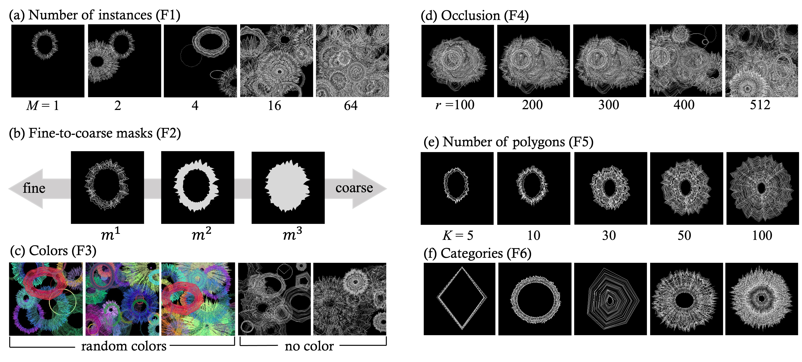
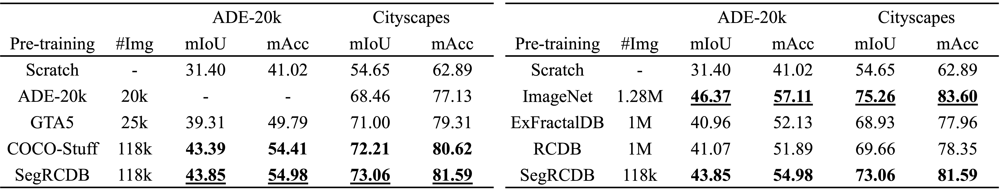
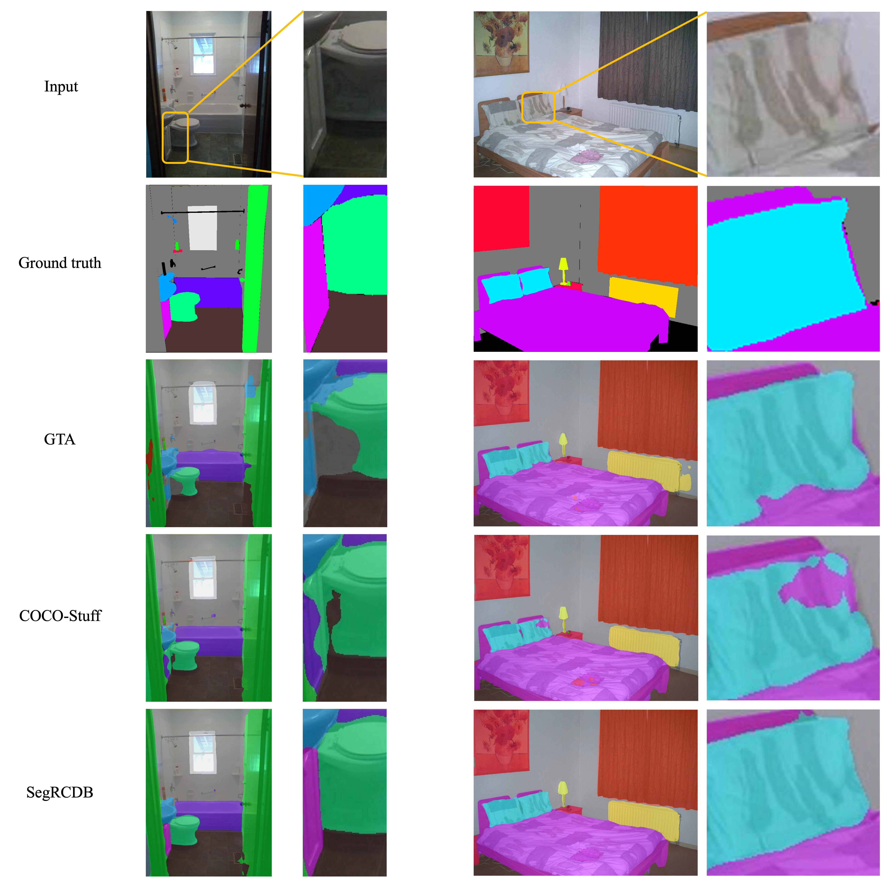

Pre-training is a strong strategy for enhancing visual models to efficiently train them with a limited number of labeled images. In semantic segmentation, creating annotation masks requires an intensive amount of labor and time, and therefore, a large-scale pre-training dataset with semantic labels is quite difficult to construct. Moreover, what matters in semantic segmentation pre-training has not been fully investigated. In this paper, we propose the Segmentation Radial Contour DataBase (SegRCDB), which for the first time applies formula-driven supervised learning for semantic segmentation. SegRCDB enables pre-training for semantic segmentation without real images or any manual semantic labels. SegRCDB is based on insights about what is important in pre-training for semantic segmentation and allows efficient pre-training. Pre-training with SegRCDB achieved higher mIoU than the pre-training with COCO-Stuff for fine-tuning on ADE-20k and Cityscapes with the same number of training images. SegRCDB has a high potential to contribute to semantic segmentation pre-training and investigation by enabling the creation of large datasets without manual annotation. The SegRCDB dataset will be released under a license that allows research and commercial use.
We investigated what elements are effective for improving the accuracy in pre-training for semantic segmentation, and created SegRCDB based on the results.
Swin Transformer base [Chen+, MM20] for backbone and UPerNet [Chen+, MM20] for the entire architecture. SegRCDB shows superior results to COCO-Stuff dataset even with the same amount of training data.
Visual comparison of fine-tuning result on ADE-20k. The first low represents the input images, and the second row represents the ground truth. An enlarged detail of the image is attached on the right. SegRCDB used 118k images.
@InProceedings{Shinoda_2023_ICCV,
author = {Shinoda, Risa and Hayamizu, Ryo and Nakashima, Kodai and Inoue, Nakamasa and Yokota, Rio and Kataoka, Hirokatsu},
title = {SegRCDB: Semantic Segmentation via Formula-Driven Supervised Learning},
booktitle = {Proceedings of the IEEE/CVF International Conference on Computer Vision (ICCV)},
month = {October},
year = {2023},
pages = {20054-20063}
}